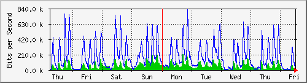
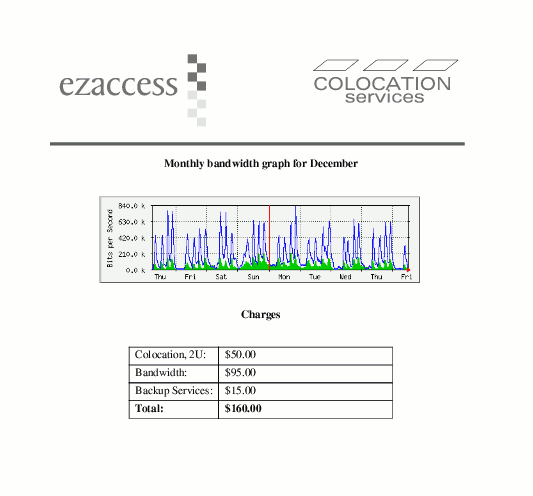

Dynamic Paper Pages
Generating PostScript
The World Wide Web is based on a few document standards (HTML, CSS) and a few protocols (DNS, HTTP, HTTPS). Historically the printed content is (or should be) described by a language called PostScript. Only high-end ink-jets support PS, but it's common for lasers to have an interpreter built in. The reason PostScript is so important is because it's a standardized way to producing printed documents. Unlike HTML, PS is an interpreted programming language, and it produces exact results.
So how do we generate PostScript?
| Web Browser | Build an HTML report. This solution requires some considerable effort if predictable output is required. |
| TeX | TeX is a macro language available on UNIX systems since the beginning of time: it was put into production on the PDP-10. Features excellent typesetting capabilities, but is very hard to script for. Unlike XML, the generation logic required to produce .tex files must handle many peculiar exceptions, and has requires case-by-case scring translations to make input sane in each particular context. |
| Docbook XML | Popular among open-source projects such as FreeBSD, KDE, GNOME, etc. Oddly enough it's better at producing HTML than PS. Why? Because like most document system, it relies on LaTeX/teTeX to generate PS, and current DocBook only understands a few formating constructs. |
| Lout | Designed for the generation of page generation and PS output only. Simple, consistent API that is easy to build using almost any generic (non-XML) templating system. This is the method I use most often. |
Including Graphics
Any valid EPS file can be included in a Lout document, and any application that can print to file can be used to generate a PS file. After printing use eps2eps to convert this to a PS file that can be embedded:
% eps2eps page_header.ps page_header.eps
Then run gs to find the real bounds of the graphic:
% gs -sDEVICE=bbox -dNOPAUSE -dBATCH page_header.eps %%BoundingBox: 65 659 512 758 %%HiResBoundingBox: 65.183496 659.745015 511.434507 757.700656
Plug these figures in at the top of the .eps file and it will now be sized correctly for inclusion in another document.
Alternatively use the ps2epsi utility included with GhostScript:
% ps2epsi page_header.ps page_header.eps
Similarly, ImageMagick's convert command can be used to convert a .png file retreaved from the web:
$ wget http://us300-ob0.teisprint.net/mrtg/72.20.214.6_fa0_6-week.png -O this_week.png $ convert this_week.png this_week.ps
{kind=link}

Building a Basic Lout Document
Now that I've worked out the means for obtaining and including some of my graphic content, I draft and test a static document.
@SysInclude{ doc } @SysInclude { tbl } @Document // @Text @Begin @IncludeGraphic "page_header.eps" @CD @Heading "Monthly bandwidth graph for December" @CD 0.7 @Scale @IncludeGraphic "this_week.eps" @CD @Heading "Charges" @CD 10c @Wide @Tbl rule{yes} aformat { @Cell A | @Cell B } { @Rowa A { Colocation, 2U: } B { $50.00 } @Rowa A { Bandwidth: } B { $95.00 } @Rowa A { Backup Services: } B { $15.00 } @Rowa A { @B Total: } B { @B $160.00 } } @End @Text
Interpret and view:
$ lout report.lout > report.ps && gv report.ps
Dynamic Page Generation
Once the layout for the presentation looks good copy the static document and plug in some logic and values with your favorite templating language. This is using eRuby:
<% total = 0 %> <% for service in services %> @Rowa A { <%= service['description'] %> } B { <%= service['price'] %> } <% total = total + service['price'] %> <% end %> @Rowa A { @B Total: } B { @B <%= total %> }
The Ruby script that imports this template is tasked with pulling the right information from the database, downloading the correct graph for that customer, running Lout to product the PostScript output, and finally with calling lpr to print the document.
First import the template, cgi, and database support:
require "eruby" require "cgi" require "dbi"
Next instantate a CGI class for parsing arguments and pull the relavant recods from the database:
cgi = CGI.new id = Integer(cgi['id']) dbh = DBI.connect('DBI:Pg:system') conn = dbh.prepare("SELECT * FROM services(?)") conn.execute(id) services = conn.fetch_all
Finally generate the doucment and print it!
puts "Content-Type: text/plain" puts puts "Processing customer (#{id})" puts puts " Building Template... [eruby]" `wget http://us300-ob0.teisprint.net/mrtg/#{service['graph']} -O this_week.png` `convert this_week.png this_week.ps` saved_stdout = $stdout output = File.open("envalope.l","w") $stdout = output ERuby::import('report.rl') output.close $stdout = saved_stdout puts " Rendering... [lout]" `/usr/pkg/bin/lout report.l > report.ps` `lpr -P8440 -h envalope.ps` puts puts "Done."
